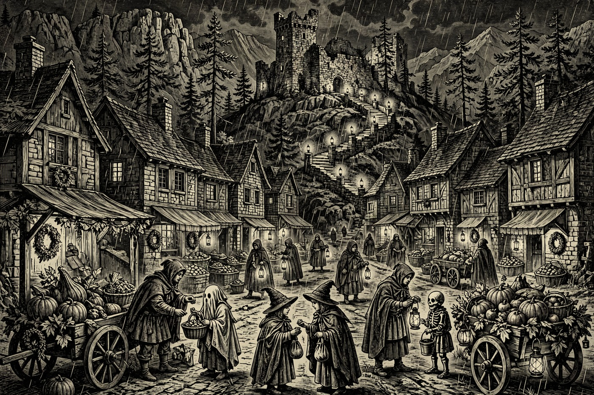

PAYSON — Hail, wayfarer, and mind the puddles on the road in! The rain has settled over the Rim for Halloween, high 58 and low 50 with a 92% chance of rain, and still the Holds are dressing up: lantern walks at Fort Verde, trunk-or-treat crowds in Camp Verde and Show Low, costumed crowds in Uptown Sedona, and a whole avenue of treats in Prescott. Closer to home, Payson starts the day with its Saturday Morning Cafe at 9:30. By the Nine, bring a cloak — it is a wet one, and a merry one.
Happening in the Holds Today
 Payson— Morning Cafe on Zoom — Saturdays at 9:30 AM, at Unity of Payson, 110 E Bonita. A gentle, friendly start to the day: an inspirational Saturday morning gathering, in person and on Zoom, that runs to about 12:30 PM. A fine first stop before the rain and the Halloween crowds take over the Hold. New faces are welcome, and the welcome is warm. Bring your coffee and settle in.
Payson— Morning Cafe on Zoom — Saturdays at 9:30 AM, at Unity of Payson, 110 E Bonita. A gentle, friendly start to the day: an inspirational Saturday morning gathering, in person and on Zoom, that runs to about 12:30 PM. A fine first stop before the rain and the Halloween crowds take over the Hold. New faces are welcome, and the welcome is warm. Bring your coffee and settle in. Camp Verde— Trunk or Treat on Main Street, 5:00–7:00 PM in downtown Camp Verde. Decorated cars and businesses line Main Street while families walk trunk to trunk for candy, with haunted houses, games, music, movies, and a Haunted Jail in the bargain. The town counts its crowd in the thousands of kids and parents in good years. Costumes are the whole point — come as your favorite hero or monster.— A Haunting at the Fort, 6:00–8:00 PM at Fort Verde State Historic Park, 125 E. Hollamon St. A ghostly lantern-lit walk through the old fort after hours, with ghost stories and a visit with those who, the rangers say, still call the fort home after 150 years. There is no extra cost for the event; regular park admission applies. It runs alongside the town Trunk or Treat, so one trip serves both.
Camp Verde— Trunk or Treat on Main Street, 5:00–7:00 PM in downtown Camp Verde. Decorated cars and businesses line Main Street while families walk trunk to trunk for candy, with haunted houses, games, music, movies, and a Haunted Jail in the bargain. The town counts its crowd in the thousands of kids and parents in good years. Costumes are the whole point — come as your favorite hero or monster.— A Haunting at the Fort, 6:00–8:00 PM at Fort Verde State Historic Park, 125 E. Hollamon St. A ghostly lantern-lit walk through the old fort after hours, with ghost stories and a visit with those who, the rangers say, still call the fort home after 150 years. There is no extra cost for the event; regular park admission applies. It runs alongside the town Trunk or Treat, so one trip serves both. Sedona— Uptown Trick or Treat, 5:00–8:00 PM in Uptown Sedona, 200 N. SR 89A. Participating merchants hand out candy while families in costume fill the Uptown corridor with Halloween fun. It is free and family friendly, and the red rocks make a fine backdrop for a parade of small ghosts. Arrive a little early — Uptown fills up fast on Halloween night.
Sedona— Uptown Trick or Treat, 5:00–8:00 PM in Uptown Sedona, 200 N. SR 89A. Participating merchants hand out candy while families in costume fill the Uptown corridor with Halloween fun. It is free and family friendly, and the red rocks make a fine backdrop for a parade of small ghosts. Arrive a little early — Uptown fills up fast on Halloween night. Show Low— Show Low Main Street Halloween Trunk or Treat 2026, from 3:00 PM on Main Street in downtown Show Low. Rows of decorated trunks, costumed kids, and candy by the bagful in the heart of town — the White Mountains way of doing Halloween up right. Families can make an early start here and still be home before the rain gets serious. Costumes encouraged for grown-ups too.
Show Low— Show Low Main Street Halloween Trunk or Treat 2026, from 3:00 PM on Main Street in downtown Show Low. Rows of decorated trunks, costumed kids, and candy by the bagful in the heart of town — the White Mountains way of doing Halloween up right. Families can make an early start here and still be home before the rain gets serious. Costumes encouraged for grown-ups too. Prescott— Halloween on Mt. Vernon, from 2:00 PM on Mt. Vernon Ave in the historic district, and it is free. The avenue closes for one of the most loved Halloween walks in Arizona: historic homes, big decorations, and treats handed out along the street. It is the kind of old-fashioned Halloween a bard would sing about. Go early in the afternoon to beat the thickest of the crowd.— Frontier Dog & Co’s Howl-O-Ween Hoedown, from 10:00 AM in Prescott. A Halloween party where the dogs are the guests of honor — costumed hounds, happy chaos, and a morning crowd that takes pup pageantry very seriously. A grand warm-up for the evening’s human festivities. Bring your four-legged companion in their finest monster dress.
Prescott— Halloween on Mt. Vernon, from 2:00 PM on Mt. Vernon Ave in the historic district, and it is free. The avenue closes for one of the most loved Halloween walks in Arizona: historic homes, big decorations, and treats handed out along the street. It is the kind of old-fashioned Halloween a bard would sing about. Go early in the afternoon to beat the thickest of the crowd.— Frontier Dog & Co’s Howl-O-Ween Hoedown, from 10:00 AM in Prescott. A Halloween party where the dogs are the guests of honor — costumed hounds, happy chaos, and a morning crowd that takes pup pageantry very seriously. A grand warm-up for the evening’s human festivities. Bring your four-legged companion in their finest monster dress.
The Days Ahead
- Sun, Nov. 1— Sedona Community Farmers Market, 8:00 AM at 2201 W SR 89A, Sedona. Local growers, bakers, and makers set out their best on a Sunday morning — fresh produce, baked goods, and Rim Country flavor in every stall. A gentle way to walk off Halloween. Valley Dwellers trade the lowland heat for Rim Country air at markets like this one.— Tierra Flamenca: Guitar, Dance, and Classical Roots, 3:00 PM at Ruth Street Community Theater in Prescott, tickets $28–$69. Lena Jácome dances and Chris Jácome plays, with Arizona Philharmonic strings — heels striking the stage and guitar carrying the hall. A rich, warm afternoon of music after a wet weekend. Worth the drive over the hill.
- Tue, Nov. 3— Trail Day Volunteer Build in Pine, from 7:00 AM off Highway 87 just before Pine. Pine Strawberry Fuel Reduction invites hikers, bikers, runners, and neighbors to clear brush, move rocks, and shape trails that will serve the Hold for years — and give fire crews better access when it matters. Tools are provided; bring water, gloves if you have them, and sturdy shoes. To volunteer, email trails@psfuelreduction.org for directions and details.— Snakes! Lizards! Tortoises!, 11:00 AM at 336 AZ-179, Sedona. A close-up morning with the desert’s scaly neighbors — the kind of talk where the creatures are the teachers and every kid in the room leans in. Fine family fare for a school-day adventure. Come with questions; leave with respect for the wildlife under the Rim.
- Fri, Nov. 6— Sedona Mountain Bike Festival opens at 9:00 AM at Posse Grounds, 525 Posse Grounds Rd., Sedona. Three days of red-rock riding begin: demo bikes, group rides, and a festival crowd of riders from every Hold and beyond. Even non-riders will enjoy the spectacle and the food. The Rim’s trails show off their best this weekend.— Small Works Show opening reception, 4:00–7:00 PM at Mountain Trails Gallery in Tlaquepaque, Sedona. The gallery’s popular Small Works show opens with new work by Arizona artist Greg Heil and others, plus animal artist Sarah Webber in attendance. Small pieces, big country — a fine First Friday evening among the galleries. The show runs through the holidays.— Anthony Mazzella — Legends of Guitar, 7:00 PM at the Prescott Elks Theater. A night of guitar legends’ music played by a master of the instrument, in one of the prettiest old theaters in the territory. A strong close to the week’s doings. Seats in historic halls go fast — plan ahead.